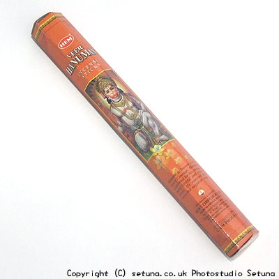

直接火を点けないまま嗅ぐと、子供の甘めの香水いり練り消しゴムに似たような匂いが(笑)します。
ちょっと独特の刺すような感じの匂いもしますがインド香にはよくある匂いですね。
火を点けても何か懐かしい匂いです。
なんというか赤ちゃんだった頃や幼かった子供の頃を思い出すような匂いとでも云えばいいのでしょうか・・・。
香りの中心はヒノキ系とオレンジブロッサムが一緒になったのような感じなのですが天花粉のような甘く粉っぽい優しい香りと供にふわりと香り始めます。
香りは部屋の中層から上層にかけてゆったりと漂い、やがて部屋の隅々にまで届きます。
ゆったりくつろぐような気持ちよさを感じます。あんまり気持ちいいので何だか眠ってしまいそうになります。(笑)
優しいタイプの香りなので焚いている途中、そばにいても平気です。というかいつもそばにいて欲しいような香りです。
焚き終わった後の残り香は天花粉のような香りがしますがあまり長続きはしないタイプです。
体に優しい感じの香りですごく良いお香だと思います。
初めてインド香を買う人には、私なら勧めるかもしれませんね。
